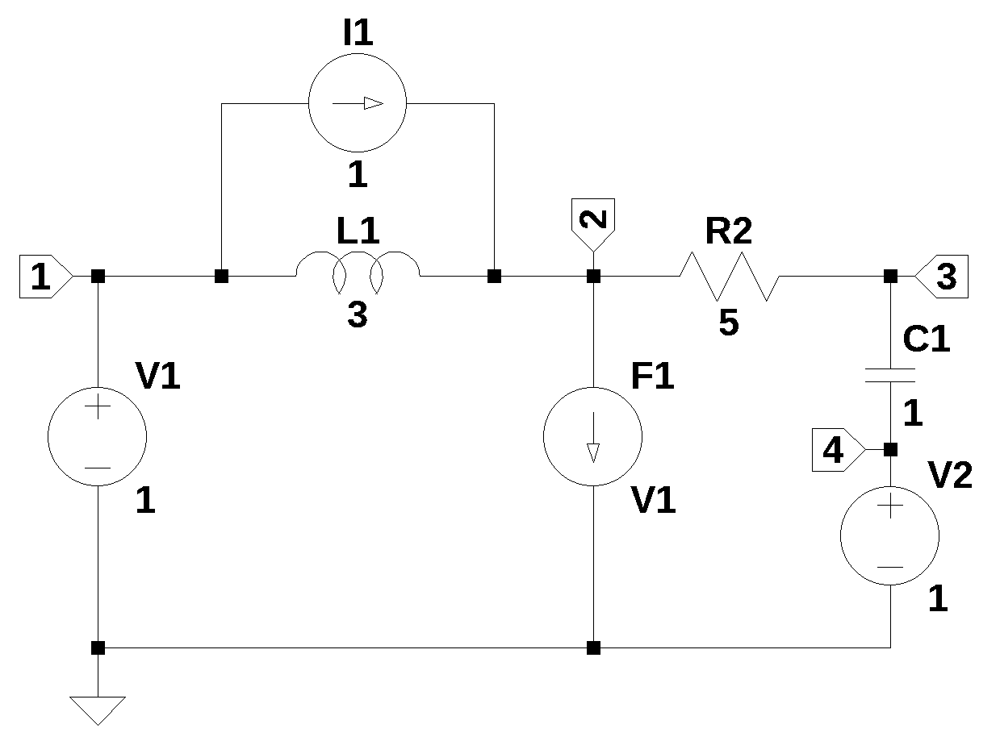

from sympy import *
import numpy as np
from tabulate import tabulate
import pandas as pd
import matplotlib.pyplot as plt
import SymMNA
from IPython.display import display, Markdown, Math, Latex
init_printing()10 Initial Conditions
In this chapter the question of initial conditions is explored, specifically the initial conditions for capacitors and inductors. Unless the initial conditions are specified, the voltage on the capacitors and the current through the inductors are assumed to be zero. In some cases it is useful to analyze a circuit with some initial conditions specified. Initial conditions for capacitors and inductors are essential in transient circuit analysis as they represent the energy stored in these components immediately prior to a change in the circuit, such as a switch opening or closing at time \(t=0\).
Mathematically, this is expressed as \(v_C(0^-) = 0\) then \(v_C(0) = V_{ic}\) and \(i_L(0^-) = 0\) then \(i_L(0)=I_{ic}\), where \(0^-\) is the first instant of time to the left of \(t=0\). Some engineering text books use \(v_C(0^-) = v_C(0)\) and \(i_L(0^-) = i_L(0)\), others use \(v_C(0) = v_C(0^+)\) and \(i_L(0) = i_L(0^+)\). So depending on which text book is consulted, there can be different ways of describing the value of the initial conditiond at the origin. Some of these inconsistancies are explored in Lundberg, Miller, and Trumper (2007). In this book, we are relying on SymPy to handel the math, so at the foundational level, we don’t see what math was used when we describe the circuit’s transient response for \(t>0\).
10.1 Capacitor Initial Conditions
In the circuit shown below, there are three circuit elements, the voltage source \(V\), \(C\) and \(R\). The value of \(V\) is considered the capacitor’s initial condition of having a voltage equal to \(V=1\) at time \(t=0\).

C_IC_test_circuit_net_list = '''
C 2 1 1e-6
V 1 0 1
R 2 0 1e3
'''The MNA equations are generated from the function SymMNA.smna.
report, network_df, i_unk_df, A, X, Z = SymMNA.smna(C_IC_test_circuit_net_list)The code below assembles the network equations from the MNA matrices and displays the equations.
# Put matrices into SymPy
X = Matrix(X)
Z = Matrix(Z)
# put the matrices into equation form
NE_sym = Eq(A*X,Z)
# free symbols are entered as SymPy variables
var(str(NE_sym.free_symbols).replace('{','').replace('}',''))
# the element values are put into a dictionary
element_values = SymMNA.get_part_values(network_df) # get element values from netlist
# display the equations
temp = ''
for i in range(shape(NE_sym.lhs)[0]):
temp += '${:s} = {:s}$<br>'.format(latex(NE_sym.rhs[i]),latex(NE_sym.lhs[i]))
Markdown(temp)\(0 = C s v_{1} - C s v_{2} + I_{V}\)
\(0 = - C s v_{1} + v_{2} \left(C s + \frac{1}{R}\right)\)
\(V = v_{1}\)
Solve the equations and display the results.
U_sym = solve(NE_sym,X)
temp = ''
for i in U_sym.keys():
temp += '${:s} = {:s}$<br>'.format(latex(i),latex(U_sym[i]))
Markdown(temp)\(v_{1} = V\)
\(v_{2} = \frac{C R V s}{C R s + 1}\)
\(I_{V} = - \frac{C V s}{C R s + 1}\)
Initial conditions for the capacitor \(C\) is set by making \(V\) a step voltage equal to the value of the initial voltage condition. \(1/s\) is substituted for the value of \(V\).
element_values[V] = 1/s
NE_ic = NE_sym.subs(element_values)
# display the equations
temp = ''
for i in range(shape(NE_ic.lhs)[0]):
temp += '${:s} = {:s}$<br>'.format(latex(NE_ic.rhs[i]),latex(NE_ic.lhs[i]))
Markdown(temp)\(0 = I_{V} + 1.0 \cdot 10^{-6} s v_{1} - 1.0 \cdot 10^{-6} s v_{2}\)
\(0 = - 1.0 \cdot 10^{-6} s v_{1} + v_{2} \cdot \left(1.0 \cdot 10^{-6} s + 0.001\right)\)
\(\frac{1}{s} = v_{1}\)
Solve the network equations and display the results.
U_ic = solve(NE_ic,X)
temp = ''
for i in U_ic.keys():
temp += '${:s} = {:s}$<br>'.format(latex(i),latex(U_ic[i]))
Markdown(temp)\(v_{1} = \frac{1}{s}\)
\(v_{2} = \frac{1}{s + 1000.0}\)
\(I_{V} = - \frac{1}{1000.0 s + 1000000.0}\)
The voltage on node 2 is simplified with the operation of nsimplify() applied to the expression. This helps SymPy solve the inverse Laplace transform.
node_2_voltage_s = U_ic[v2].nsimplify()
node_2_voltage_s\(\displaystyle \frac{1}{s + 1000}\)
Declare the symbol \(t\) to be used as the time variable.
t = symbols('t',positive=True) # t > 0node_2_voltage_t = inverse_laplace_transform(node_2_voltage_s, s, t)
node_2_voltage_t\(\displaystyle e^{- 1000 t}\)
Use lambdify to generate a function of time.
func_node_2_voltage_t = lambdify(t, node_2_voltage_t) Plot the voltage at node 2.
x_axis = np.linspace(0, 10e-3, 2000, endpoint=True)
plt.title('Node 2 voltage')
plt.plot(x_axis*1e3, func_node_2_voltage_t(x_axis),'-b')
plt.ylabel('v(t), volts')
plt.xlabel('time, msec')
plt.grid()
plt.show()
Plot the current in the capacitor, this is the same as \(I_{V}\).
V_current_s = U_ic[I_V].nsimplify()
V_current_s\(\displaystyle - \frac{1}{1000 s + 1000000}\)
V_current_t = inverse_laplace_transform(V_current_s, s, t)
V_current_t\(\displaystyle - \frac{e^{- 1000 t}}{1000}\)
func_V_current_t = lambdify(t, V_current_t) The plot below shows the node voltages versus time.
plt.title('V current')
plt.plot(x_axis*1e3, func_V_current_t(x_axis),'-b')
plt.ylabel('i(t), amps')
plt.xlabel('time, msec')
plt.grid()
plt.show()
10.2 Inductor Initial Conditions
The initial conditions for an inductor when using MNA, can be represented by the current source \(I\).

L_IC_test_circuit_net_list = '''
R 1 0 1e3
L 1 0 1
I 0 1 0
'''The MNA equations are generated from the function SymMNA.smna.
report, network_df, i_unk_df, A, X, Z = SymMNA.smna(L_IC_test_circuit_net_list)The code below assembles the network equations from the MNA matrices and displays the equations.
# Put matrices into SymPy
X = Matrix(X)
Z = Matrix(Z)
# put the matrices into equation form
NE_sym = Eq(A*X,Z)
# free symbols are entered as SymPy variables
var(str(NE_sym.free_symbols).replace('{','').replace('}',''))
# the element values are put into a dictionary
element_values = SymMNA.get_part_values(network_df) # get element values from netlist
# display the equations
temp = ''
for i in range(shape(NE_sym.lhs)[0]):
temp += '${:s} = {:s}$<br>'.format(latex(NE_sym.rhs[i]),latex(NE_sym.lhs[i]))
Markdown(temp)\(i = I_{L} + \frac{v_{1}}{R}\)
\(0 = - I_{L} L s + v_{1}\)
Solve the equations and display the results.
U_sym = solve(NE_sym,X)
temp = ''
for i in U_sym.keys():
temp += '${:s} = {:s}$<br>'.format(latex(i),latex(U_sym[i]))
Markdown(temp)\(v_{1} = \frac{i L R s}{L s + R}\)
\(I_{L} = \frac{i R}{L s + R}\)
The initial conditions for the inductor are set by the current source \(I\). A step function with a value of 1 is used.
element_values[I] = 1/s
NE_ic = NE_sym.subs(element_values)# display the equations
temp = ''
for i in range(shape(NE_ic.lhs)[0]):
temp += '${:s} = {:s}$<br>'.format(latex(NE_ic.rhs[i]),latex(NE_ic.lhs[i]))
Markdown(temp)\(\frac{1}{s} = I_{L} + 0.001 v_{1}\)
\(0 = - 1.0 I_{L} s + v_{1}\)
Solve the network equations and display the results.
U_ic = solve(NE_ic,X)
temp = ''
for i in U_ic.keys():
temp += '${:s} = {:s}$<br>'.format(latex(i),latex(U_ic[i]))
Markdown(temp)\(v_{1} = \frac{1000.0}{s + 1000.0}\)
\(I_{L} = \frac{1000.0}{s^{2} + 1000.0 s}\)
The voltage on node 2 is symplified with nsimplify().
temp = U_ic[v1].nsimplify().simplify().expand().together()
temp\(\displaystyle \frac{1000}{s + 1000}\)
t = symbols('t',positive=True) # t > 0node_1_voltage = inverse_laplace_transform(temp, s, t)
node_1_voltage\(\displaystyle 1000 e^{- 1000 t}\)
func_node_1_voltage = lambdify(t, node_1_voltage) The plot below shows the node voltages versus time.
x_axis = np.linspace(0, 10e-3, 2000, endpoint=True)
plt.title('Node 1 voltage')
plt.plot(x_axis*1e3, func_node_1_voltage(x_axis),'-b')
plt.ylabel('v1(t), volts')
plt.xlabel('time, msec')
plt.grid()
plt.show()
Find the current in the inductor.
L_current_s = U_ic[I_L].nsimplify().simplify().expand().together()
L_current_s\(\displaystyle \frac{1000}{s \left(s + 1000\right)}\)
L_current_t = inverse_laplace_transform(L_current_s, s, t)
L_current_t\(\displaystyle 1 - e^{- 1000 t}\)
func_L_current_t = lambdify(t, L_current_t) The plot below shows inductor current versus time.
x_axis = np.linspace(0, 10e-3, 2000, endpoint=True)
plt.title('Inductor current')
plt.plot(x_axis*1e3, func_L_current_t(x_axis),'-b')
plt.ylabel('L1 current, amps')
plt.xlabel('time, msec')
plt.grid()
plt.show()
The results given for the inductor current are not correct. The inductor current should approach zero. This tells us that representing the inductor’s initial current with a step function current source can be used to find the inductor current. The node voltages are correct. The steady state value of the step function is shorted by the inductor and the voltage across the inductor from this contribution is 0. When solving for the inductor’s initial condition, the SPICE statement, .ic I(L)=-1e-3 is used and the additional current source is not included in the simulation.
10.3 Initial Conditions Test Circuit
A circuit with initial conditions consisting of a capacitor with an initial voltage and an inductor with initial current is analysed. The circuit in Figure 10.3 has seven branches and four nodes. Capacitor, C1, has an initial voltage at \(t=0\) of -0.2 volts and the inductor, L1, has an initial current at \(t=0\) of 0.1 amps. The voltage source V2 represents the initial voltage on the capacitor and current source, I1, represents the initial current flowing in the inductor. The DC voltage source, \(V_1(0^-)=0\) and \(V_1(0)=1\). There is a current controlled current source, \(F_1\), that is controlled by the current in \(V_1\) and has a gain of 2. The circuit was drawn using LTSpice and the netlist was pasted into the code.

The netlist generated by LTSpice is pasted into the cell below and some edits were made to remove the inductor series resistance.
net_list = '''
V1 1 0 1
R2 3 2 5
C1 3 4 1
V2 4 0 -0.2
L1 1 2 3
I1 2 1 0.1
F1 2 0 V1 2
'''The MNA equations are generated from the function SymMNA.smna.
report, network_df, i_unk_df, A, X, Z = SymMNA.smna(net_list)The code below assembles the network equations from the MNA matrices and displays the equations.
# Put matrices into SymPy
X = Matrix(X)
Z = Matrix(Z)
# put the matrices into equation form
NE_sym = Eq(A*X,Z)
# free symbols are entered as SymPy variables
var(str(NE_sym.free_symbols).replace('{','').replace('}',''))
# the element values are put into a dictionary
element_values = SymMNA.get_part_values(network_df) # get element values from netlist
# display the equations
temp = ''
for i in range(shape(NE_sym.lhs)[0]):
temp += '${:s} = {:s}$<br>'.format(latex(NE_sym.rhs[i]),latex(NE_sym.lhs[i]))
Markdown(temp)\(I_{1} = I_{L1} + I_{V1}\)
\(- I_{1} = I_{F1} - I_{L1} + \frac{v_{2}}{R_{2}} - \frac{v_{3}}{R_{2}}\)
\(0 = - C_{1} s v_{4} + v_{3} \left(C_{1} s + \frac{1}{R_{2}}\right) - \frac{v_{2}}{R_{2}}\)
\(0 = - C_{1} s v_{3} + C_{1} s v_{4} + I_{V2}\)
\(V_{1} = v_{1}\)
\(V_{2} = v_{4}\)
\(0 = - I_{L1} L_{1} s + v_{1} - v_{2}\)
\(0 = I_{F1} - I_{V1} f_{1}\)
The Laplace initial values expressions for \(V_1\), \(V_2\) and \(I_1\) are inserted into the element value dictionary as step functions with the appropriate scaling.
element_values[V1] = 1/s
element_values[V2] = -0.2/s
element_values[I1] = 0.1/s
NE_ic = NE_sym.subs(element_values)
# display the equations
temp = ''
for i in range(shape(NE_ic.lhs)[0]):
temp += '${:s} = {:s}$<br>'.format(latex(NE_ic.rhs[i]),latex(NE_ic.lhs[i]))
Markdown(temp)\(\frac{0.1}{s} = I_{L1} + I_{V1}\)
\(- \frac{0.1}{s} = I_{F1} - I_{L1} + 0.2 v_{2} - 0.2 v_{3}\)
\(0 = - 1.0 s v_{4} - 0.2 v_{2} + v_{3} \cdot \left(1.0 s + 0.2\right)\)
\(0 = I_{V2} - 1.0 s v_{3} + 1.0 s v_{4}\)
\(\frac{1}{s} = v_{1}\)
\(- \frac{0.2}{s} = v_{4}\)
\(0 = - 3.0 I_{L1} s + v_{1} - v_{2}\)
\(0 = I_{F1} - 2.0 I_{V1}\)
Solve the network equations and display the results.
U_ic = solve(NE_ic,X)
temp = ''
for i in U_ic.keys():
temp += '${:s} = {:s}$<br>'.format(latex(i),latex(U_ic[i]))
Markdown(temp)\(v_{1} = \frac{1}{s}\)
\(v_{2} = \frac{- 17.0 s^{2} + 47.0 s + 10.0}{10.0 s^{3} + 50.0 s^{2} + 10.0 s}\)
\(v_{3} = \frac{- 2.0 s^{2} - 13.0 s + 10.0}{10.0 s^{3} + 50.0 s^{2} + 10.0 s}\)
\(v_{4} = - \frac{0.2}{s}\)
\(I_{V1} = \frac{s - 4.0}{10.0 s^{2} + 50.0 s + 10.0}\)
\(I_{V2} = \frac{12.0 - 3.0 s}{10.0 s^{2} + 50.0 s + 10.0}\)
\(I_{L1} = \frac{9.0 s + 1.0}{10.0 s^{3} + 50.0 s^{2} + 10.0 s}\)
\(I_{F1} = \frac{s - 4.0}{5.0 s^{2} + 25.0 s + 5.0}\)
The expression for the voltage on node 2 is simplified with the nsimplify() function. This helps SymPy solve the inverse Laplace transform.
temp = U_ic[v2].nsimplify()
temp\(\displaystyle \frac{- 17 s^{2} + 47 s + 10}{10 s^{3} + 50 s^{2} + 10 s}\)
t = symbols('t',positive=True) # t > 0node_2_voltage = inverse_laplace_transform(temp, s, t)
node_2_voltage\(\displaystyle \left(\frac{\sqrt{21} \left(- 43 e^{\frac{t \left(5 - \sqrt{21}\right)}{2}} - 9 \sqrt{21} e^{\frac{t \left(5 - \sqrt{21}\right)}{2}} - 9 \sqrt{21} e^{\frac{t \left(\sqrt{21} + 5\right)}{2}} + 43 e^{\frac{t \left(\sqrt{21} + 5\right)}{2}}\right)}{140} + e^{5 t}\right) e^{- 5 t}\)
func_node_2_voltage = lambdify(t, node_2_voltage) The voltage on node 3 is obtained in a similar way.
temp = U_ic[v3].nsimplify()
temp\(\displaystyle \frac{- 2 s^{2} - 13 s + 10}{10 s^{3} + 50 s^{2} + 10 s}\)
node_3_voltage = inverse_laplace_transform(temp, s, t)
node_3_voltage\(\displaystyle \left(\frac{\sqrt{21} \left(- 2 \sqrt{21} e^{\frac{t \left(5 - \sqrt{21}\right)}{2}} + 11 e^{\frac{t \left(5 - \sqrt{21}\right)}{2}} - 11 e^{\frac{t \left(\sqrt{21} + 5\right)}{2}} - 2 \sqrt{21} e^{\frac{t \left(\sqrt{21} + 5\right)}{2}}\right)}{70} + e^{5 t}\right) e^{- 5 t}\)
func_node_3_voltage = lambdify(t, node_3_voltage) The plot below shows the node voltages versus time.
x = np.linspace(0, 10, 2000, endpoint=True)
plt.title('Node voltages vs time')
plt.plot(x, func_node_2_voltage(x),label='v2(t)')
plt.plot(x, func_node_3_voltage(x),label='v3(t)')
plt.ylabel('v(t), volts')
plt.xlabel('time, sec')
plt.legend()
plt.grid()
plt.show()
The results obtained above agree with the LTSpice answers for the node voltages.
10.4 Summary
In this chapter, MNA was used to analyze circuits which had initial conditions defined for the capacitors and inductors.
- A capacitor’s initial voltage condition was represented by step function voltage source
- An inductor’s initial current condition was represented by a step function current source
Note
The solution obtained from MNA for the inductors is not correct, however the node voltages are correct. I suspect that specifying the inductor’s initial condition as a current and using a parallel current source versus the magnetic flux, \(\Psi\), is the issue.